When it comes to microservices, a lot of literature in the industry is focused on the design and development of the mechanisms that provide computing services to the end user. Despite this, it is widely known that microservices require us to fundamentally change the way we think about storage. Microservices are typically expected to be self-contained. This applies not only to their logic but also to their data storage mechanism. Unlike monoliths, where centralizing storage in a nonredundant manner is the guiding principle, microservices require architects to think of decentralization. In a real microservice environment, data is a first-class citizen and is to be treated in a similar way to any computing service. Microservice architects encourage data localization, in which data is kept close to the service that needs it, so the system can become less reliant on external databases. By avoiding shared and centralized databases, a microservice environment works only with the data available within the bounded context, thus ensuring autonomy and scale at the same time. Additionally, such a distributed storage design reduces the possibility of storage mechanisms becoming the “single points of failure (SPOFs).”
Security-wise, storing data can be very costly if you examine the risks involved. IBM and the Ponemon Institute publish an annual report detailing the average cost of a data breach for companies throughout the world, and as you can imagine, there are high costs associated with each breach. The average cost of a data breach, per this report, is $3.86 million. This is even higher if you are in a highly regulated industry where there may be regulatory or financial repercussions to data breaches. Thus, the microservice approach of polyglot persistence (using multiple data storage mechanisms) requires special attention to detail when it comes to security at rest.
Microservice architectures generally result in the creation of a collection of distributed storage mechanisms. These different storage objects are loosely coupled with one another, much like the microservices themselves. It is common for these distributed storages to follow the rules of the bounded contexts in which they reside. Figure 4-1 illustrates a sample domain-driven setup with distributed persistent storages that reside within the bounded contexts of the services.
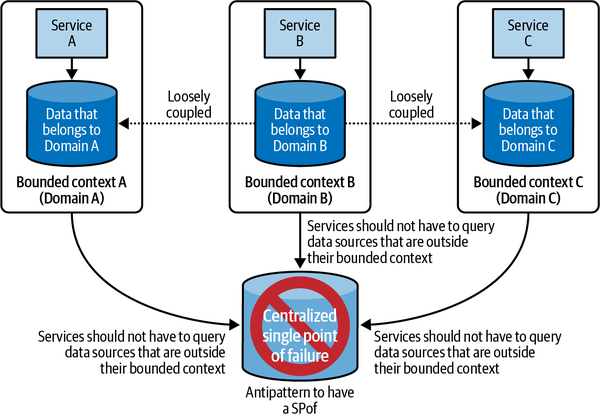
“Storage” could mean anything from a database system, application events, flat files, media objects, cached data, binary large objects (blobs), as well as container images. In fact, most microservice environments tend to use polyglot persistence since each domain may have a different requirement out of its data storage platform. Some services may benefit from a NoSQL database, while some others may prefer to use a relational database management system (RDBMS). A distributed and localized storage mechanism ensures that you can use the best tool for the job.
In this chapter, I will focus primarily on the security at rest for microservices.
As I have mentioned in the previous chapters, security around data can be achieved through two ways:
Preventing access to this data for unauthorized users through access control
Encrypting this data so unauthorized exposure of data will not be readable
To secure a storage mechanism, the first task is to identify the permissions and security policies that govern access to it. In creating these policies, the principle of least privilege (PoLP) that I discussed in Chapter 2 is a good rule of thumb. To implement PoLP, AWS allows the use of identity and access management (IAM) policies for all of its cloud storage offerings, and I will use them often in this chapter.
Domain-driven environments, as opposed to traditional monoliths, have the natural advantage of being easy to secure using PoLP since data and business units are segregated already and hence access control can be streamlined.
Apart from access control, the data that is stored on AWS should also be encrypted. Encrypting this data provides an added layer of protection from unauthorized access, in addition to any existing access control that is added through IAM policies. Once the data is encrypted, it is important to control access to the encryption keys. On AWS, virtually all encryption can be handled by the AWS Key Management Servive (KMS) that I covered in depth in Chapter 3.
Although every manager likes to claim that all customer data should be protected, let’s be honest: not all data is the same. There is an inherent hierarchy in terms of the sensitivity and importance of data. For example, personally identifiable data (PII), which can be used to identify the customers is more sensitive and has to be protected with more powerful controls than anonymized machine learning training data. In terms of the records that carry the biggest price tag when compromised, customer PII is the costliest (at $150), according to the IBM/Ponemon Cost of a Data Breach Report. Data classification is the step in security management that helps administrators in identifying, labeling, and realigning the organization’s security to position itself to fulfill the needs of the sensitivity of the data. In this process, data types and sensitivity levels are identified, along with the likely consequences of compromise, loss, or misuse of the data.
It has been empirically proven that organizations that adopt strong data classification policies are better positioned to ward off potential threats. Government organizations have also prescribed various data classification levels in the past. For example, the US National Classification Scheme based on Executive Order 12356 recognizes three data classifications: Confidential, Secret, and Top Secret. The UK government also has three classifications: Official, Secret, and Top Secret.
Each class of data may have a different security requirement while storing it. More importantly, the access that employees have may be different and hence, the data classification may dictate the identity management and access control structure within your organization. In my experience, companies have adopted innovative ways to systematically classify the resources that store sensitive data in physical data centers. Several companies implemented color coding of servers indicating the type of data that could be stored on each server. Other companies separated the servers that carried sensitive data and kept them in a separate location where only privileged employees had access.
When I say “data storage,” I mean intentional as well as unintentional persistence of data. Intentional persistence is the data that you wish to persist in an object store or a database. Unintentional persistence includes data that is persisted as a result of runtime operations such as log files, memory dumps, backups, and so forth. In my experience, many administrators tend to overlook unintentional persistence when they try to frame their data storage policy.
On AWS, data can be classified by using AWS tags that I briefly talked about in Chapter 2. AWS tags allow you to assign metadata to your cloud resources so the administrators will be aware of the type of data these resources store. Using these tags, conditional logic can be applied to access control to enforce security clearance checks while granting access. For compliance validation, AWS tags can also help identify and track resources that contain sensitive data. From a security perspective, you should tag each and every resource within your account, especially if it stores sensitive data.
Envelope encryption is the tool that AWS uses frequently for encrypting all the data that is stored at rest. I have already talked in depth (Chapter 3) about how AWS KMS works, along with envelope encryption. But for those who need a refresher, here is a quick recap.
In basic encryption, whenever plaintext data needs to be encrypted, you can use the AWS-256 algorithm, which requires a data key as the input. This encrypted data (also known as the ciphertext) can be decrypted, accessed, and read by a recipient as long as they are in possession of the data key that was used to encrypt this data in the first place. Envelope encryption takes this process a step further. In envelope encryption, the data key that is used to encrypt the plaintext is further encrypted using a different key known as a customer master key (CMK).
Upon encryption, the ciphertext data and the ciphertext data key are stored together, while the plaintext data key is deleted. Access is restricted to the CMK and is provided only to the intended recipient of this data.
Figure 4-2 illustrates blocks of data that are stored using envelope encryption.
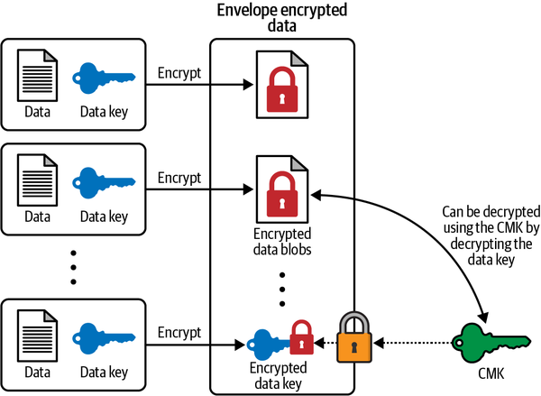
To read the envelope encrypted data, the reader first has to use the CMK to decrypt the encrypted data key and obtain the plaintext data key. With this data key, the reader can then decrypt the encrypted data blobs and obtain the original plaintext data that was encrypted. Thus, the intended recipient can decrypt the data as long as they have access to the CMK.
Almost every encrypted data storage system on AWS will have three common themes:
The CMK that you trust is securely stored away from unauthorized access, either on your own servers, on AWS KMS, or inside a hardware security module (HSM).
You trust the encryption algorithm to be unbreakable. In most of the AWS examples, AES-256 is generally considered to be a secure algorithm.
There is a process of encrypting data. This may include encrypting data on the servers or enabling clients to encrypt this data before sending it to AWS. This process also specifies policies for how the data key is cached on the client side. Different storage systems on AWS use a different caching policy for data keys, which I will be discussing in detail in this chapter.
In AWS Simple Storage Servive or Amazon Simple Storage Service (S3), storage “objects” are stored inside buckets. The most important responsibility of every security professional in the S3 environment lies in applying the PoLP to all objects and buckets within S3 that originate from different microservices. This means that only the users and resources that are required to access these objects should be allowed access.
Since AWS S3 is a managed service, any data that is stored in S3 may share its physical resources with other cloud customers. Hence, to protect your sensitive data, AWS gives you two options, which should be used together for any secure storage system:
AWS IAM policies (specifically IAM principal-based policies and AWS S3 resource-based bucket policies), which I mentioned in Chapter 2, can be used to control access to these resources and ensure that the PoLP is applied.
AWS KMS can be used to encrypt the objects that are stored inside AWS S3 buckets. This ensures that only principals with access to the encryption key used to encrypt this data can read these objects.
Encryption and access control play an equally important role in maintaining the security of data; both methods should be employed to protect it from unauthorized access. Figure 4-3 shows how you can leverage AWS KMS and AWS IAM policies to protect your data.
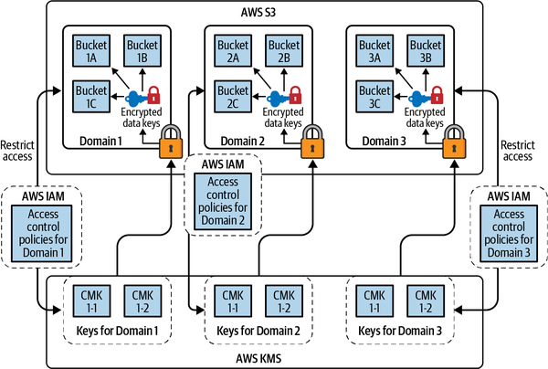
I will first talk about the techniques that you can use for encrypting data objects. There are four ways you can encrypt data objects on AWS S3. Each of these ways provides some flexibility and convenience to end users and hence, you can choose any of these methods that suit the needs of your organization. They are:
AWS server-side encryption (AWS SSE-S3—AWS-managed keys)
AWS server-side encryption KMS (AWS SSE-KMS—customer-managed keys)
AWS server-side encryption with customer-provided keys (AWS SSE-C—customer-provided keys)
AWS S3 client-side encryption (encrypting data on the client before sending it over to AWS S3)
Figure 4-4 shows a handy flowchart that can help you determine the type of encryption you need for your organization’s needs.
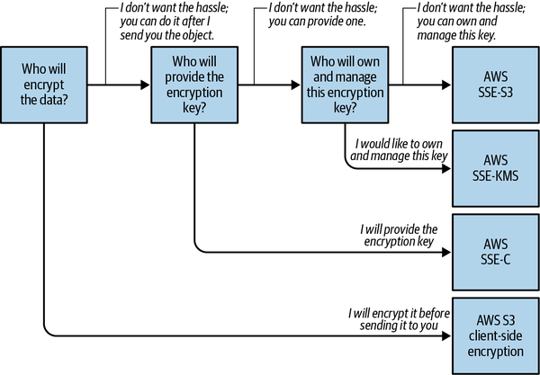
All of the encryption choices can use AWS KMS to achieve encryption on AWS. Hence, a deep and fundamental understanding of AWS KMS can go a long way in understanding the process of encryption on AWS S3.
This is the default mode of encrypting data objects inside AWS S3. For organizations that need very basic object encryption without wishing to control the lifecycle of the CMK that was used to encrypt the data items, AWS SSE-S3 provides a quick and easy way of introducing encryption on AWS. The biggest advantage of using AWS SSE-S3 is the ease of use and simplicity that it provides to cloud users.
AWS SSE-S3 can be enabled on a per bucket level on the AWS Management Console, as seen in Figure 4-5.
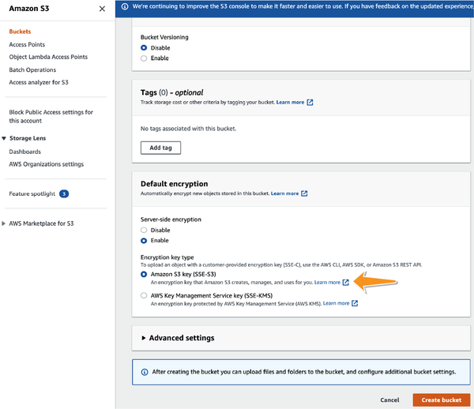
Once enabled, AWS encrypts all the objects inside this bucket using a data key. This data key is then encrypted using AWS KMS and a CMK that is maintained, protected, and rotated for you by AWS.
Due to the presence of AWS SSE-S3, the amount of investment required to enable encryption for objects in AWS S3 is now extremely low. Although not ideal (since you completely trust AWS with your key and the encryption process), the ability to enable encryption by the push of a button should nudge all users to encrypt all of their storage objects. I don’t know a single reason why objects on AWS S3 shouldn’t be encrypted.
Of course, for those interested in more control, there are other ways of encrypting objects that are stored on AWS S3.
Users who prefer a more flexible encryption process than AWS SSE-S3 can use AWS KMS more explicitly for encryption. You can use a KMS key that you control on AWS KMS. This way, you can also be in charge of the lifecycle of the key that is used to encrypt data objects on AWS.
The encryption can be enabled on individual objects or enabled by default for each object in the bucket, similar to how AWS SSE-S3 was enabled in Figure 4-5. Figure 4-6 shows how AWS SSE-KMS can be enabled as the default option for buckets.
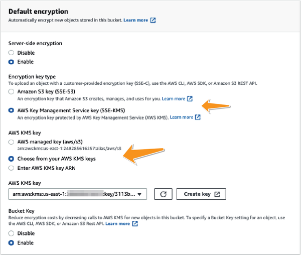
The final type of server-side encryption on AWS S3 is the AWS SSE-C. In this encryption process, the control over the encryption process is shifted even more to the end user. Instead of pointing AWS S3 to use an encryption key that is present on AWS KMS, you can include the encryption key within your PutObject request and instruct AWS S3 to encrypt the object using the key that you provide. This same key has to be provided during the GetObject operation in order to decrypt and retrieve the object. AWS S3 will use the key you provide, encrypt the object, and store it on AWS S3, then delete the key permanently. This way, you can have complete flexibility in controlling access to and securing the decryption key for the objects that are stored on AWS. At the same time, the encryption process takes place entirely on AWS S3 and hence, you need not maintain encryption or decryption code within your services.
AWS provides many different options for encrypting data after it has been uploaded to AWS S3, but you may prefer to encrypt data within your application even before it is transferred to AWS. Client-side encryption is the act of encrypting data before sending it to Amazon S3 and can be used for such use cases. In client-side encryption, you manage the CMK that you want to encrypt the data with. You can then use some of the client-side software development kit (SDK) to encrypt the data within your application and send this data to AWS to store it on the cloud. From the AWS point of view, this client-encrypted data is no different from any other data that it stores. You can then optionally also enable server-side encryption if you desire. This way, client-side encryption can offer an additional layer of protection against potential threats. More information on client-side encryption can be found at Amazon.
As I discussed in Chapter 2, resource-based policies restrict access to AWS resources and can be applied to certain resources. On AWS S3, these resource-based policies are called bucket policies. These policies answer the question, Which principals are allowed to access the objects inside these S3 buckets and under which conditions should this access be permitted or denied? Bucket policies can be added on the AWS Management Console, as seen in Figure 4-7.
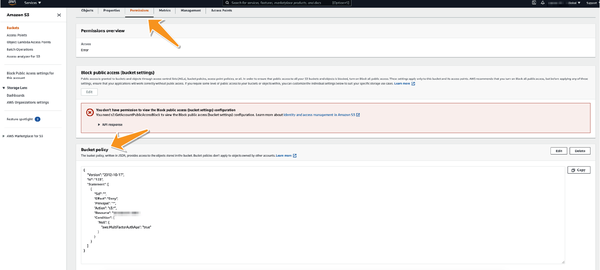
AWS also provides some great documentation on AWS bucket policies. The following two policies are examples of ways you can secure your S3 buckets.
As a security administrator, you can deny unencrypted uploads to your bucket by adding an IAM policy such as recommended by AWS.
{
"Sid": "DenyUnencryptedObjectUploads",
"Effect": "Deny",
"Principal": "*",
"Action": "s3:PutObject",
"Resource": "arn:aws:s3:::awsexamplebucket1/*",
"Condition": {
"Null": {
"s3:x-amz-server-side-encryption": "true"
}
}
}
The Condition statement in this block is what makes this policy effective.
Another commonly used bucket policy is to enforce a multifactor authentication (MFA) requirement for any request that wants to interact with objects in the bucket:
{
"Version": "2012-10-17",
"Id": "123",
"Statement": [
{
"Sid": "",
"Effect": "Deny",
"Principal": "*",
"Action": "s3:*",
"Resource": "arn:aws:s3:::DOC-EXAMPLE-BUCKET/taxdocuments/*",
"Condition": { "Null": { "aws:MultiFactorAuthAge": true }}
}
]
}
Appendix D provides a hands-on tutorial that cloud security professionals can use to apply PoLP to their S3 buckets.
Using Amazon GuardDuty, you can continuously monitor for threats and unauthorized behavior to protect your data stored in Amazon S3. Using machine learning, anomaly detection, and threat intelligence integrated into it, AWS GuardDuty identifies and prioritizes potential threats. AWS CloudTrail and virtual private cloud (VPC) flow logs, as well as DNS logs, are among GuardDuty’s data sources. GuardDuty detects threats as well as sends out an automated response, speeding remediation and recovery times.
GuardDuty monitors threats to your Amazon S3 site by looking at CloudTrail S3 management events and CloudTrail management events. Data that GuardDuty customers generate, such as findings, gets encrypted while at rest using AWS KMS with AWS master keys (CMK), which is secured under AWS Shared Responsibility Model (SRM).
In order to maintain compliance, it is sometimes necessary to have a system of record (SOR) that is the authoritative data source for a given piece of information. This SOR is not just for internal consumers but also for external parties such as law enforcement authorities or compliance auditors to inspect in case of discrepancies. As a result, this SOR should be something that external agencies should be able to trust and use as evidence in case of discrepancies where your organization may have a conflict of interest. Thus, a certification of the integrity of the data by a third party may be important in such a situation.
With AWS Glacier Vault Lock, data can be stored in a way that can be certified for regulatory purposes for its integrity and authenticity. At the heart of this integrity process is the Glacier Vault Lock policy that controls how the data is stored and what access controls the organization has over their own data. Vault policies can have controls such as write once read many (WORM), which prevents future changes to the data that is stored. Once the policy has been locked, it cannot be changed.
You can use the AWS S3 Glacier bucket to store the data and lock the bucket to demonstrate to any regulatory body that may decide to audit you that the data has never been altered.
In contrast to a vault access policy, a vault lock policy may be locked to prevent further changes to your vault, ensuring compliance for the vault.
To initiate a vault lock, you need to perform two steps:
Attach a vault lock policy to your vault that will set the lock to an in-progress state, returning a lock ID. The lock will expire after 24 hours if the policy has not been validated.
If you are not satisfied with the results of the process, you can restart the lock process from scratch during the 24-hour validation period.
In this section, I will talk about how you can secure the services that are responsible for running your microservices. Before I talk about securing microservices at rest, I will briefly discuss what a typical development process looks like in a typical microservice shop.
Depending on development practices, there may be certain changes in specific steps, but overall, the flow looks something like what is illustrated in Figure 4-8.
Developers typically write code in a language of their choice. This may be Java, Python, Go, TypeScript, or any language of choice.
Security risk: attackers may be able to exploit any code-level vulnerabilities or inject insecure libraries at the code level, and thus jeopardize the security posture of your entire application.
If you want to run this code on a typical containerized environment such as on a Kubernetes cluster, you compile this code on a continuous integration continuous delivery (CICD) pipeline and perform various steps on it until it turns into a containerized image. This CICD pipeline may use a storage system to hold persistent data such as libraries, configuration files, and more. If it runs on an AWS Elastic Cloud Compute (EC2) instance, an AWS Elastic Block Store (EBS) volume will generally hold such data.
Security risk: the EBS volumes that are used to build the image may be hijacked and used against your build process to inject vulnerabilities into the application or leak out sensitive code.
Once you have a containerized image such as a Docker image, you typically store this image on a Docker repository. You have many options here to store this image. AWS provides you with AWS Elastoc Container Registry (ECR) where you can store a Docker image.
Security risk: an unsecured storage of built images may result in allowing malicious actors to tamper with built container images and inject malicious code inside these containers. Alternatively, code can be leaked out of an unsecured container storage.
The Docker image from Step 2 can now be promoted to various environments of your choice. This way, you can have the same image running in your production environment as your staging environment. If you use Amazon EKS to run a Kubernetes cluster, and if you have your nodes running on AWS EC2, you may pull the image out of the ECR registry and promote it to the EC2 nodes. Similar to the CICD pipelines in Step 2, these nodes may employ EBS volumes to store persistent data. Security professionals may need to secure these EBS volumes.
Security risk: Although the containers run on the Kubernetes nodes, they may use EBS volumes to store persistent data. Very similar to Step 2, malicious actors who gain unauthorized access to these EBS volumes could manipulate the data stored on these volumes or leak out sensitive data to other external entities.
Alternatively, if you decide to run your code on AWS Lambda, you may deploy the code directly onto AWS Lambda and not have to worry about Steps 2–3.
Security risk: on AWS Lambda, you are not supposed to have long-term storage. However, the environment variables that your functions need may be stored on AWS and may need to be secured.
All microservice shops follow some variant of this flow, as seen in Figure 4-8.
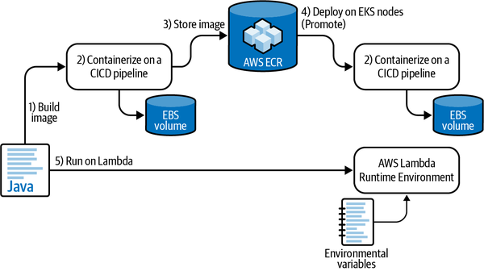
In the following section, I’ll discuss the different security tools you have at your disposal to keep this data safe.
Static code analysis is an up-and-coming branch in the field of computer security. Until recently, most static code analysis was difficult to perform, primarily due to the nondeterministic nature of computer languages. However, with the advent of AI and machine learning, security tools that end up identifying security vulnerabilities in code are only getting more accurate over time.
AWS provides users with AWS CodeGuru, which uses machine learning and AI to perform various types of analysis on your code. AWS CodeGuru then compares your code with its sample repositories and uses machine learning to identify security-related issues as well as other best practices in code. This analysis includes identifying possible resource leaks, exploits, and vulnerabilities with your code.
Static code analysis ensures that any problems with your codebase are identified early on in their lifecycle before they are shipped to production. Figure 4-9 shows a sample code where AWS CodeGuru recommended code-level changes.
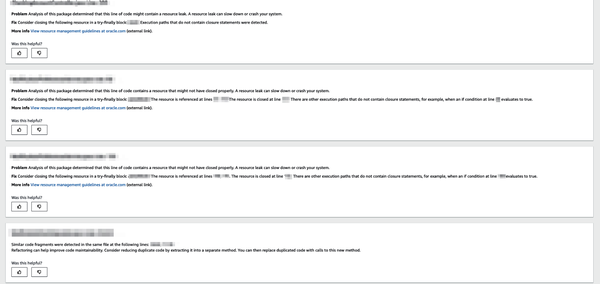
AWS ECR is the repository that AWS provides you with for storing built containers to house your microservices. This way, you can build microservices using Docker and promote these images to other environments. These images are provided with secure storage throughout their life. Using AWS ECR for storing containers offers multiple advantages, and I will highlight three of the most important reasons why AWS ECR is best suited for the job.
AWS allows for the use of IAM policies to control access to the AWS ECR repositories. This way, the various contexts within your organization can be segregated using the PoLP to decide which containers can be accessed by the various entities within your organization. You can use identity-based policies as well as resource-based policies to control access.
AWS maintains a list of various IAM policies that you can apply to your ECR repositories. Here is a sample IAM policy that allows the user to list and manage images in an ECR repository:
{
"Version":"2012-10-17",
"Statement":[
{
"Sid":"ListImagesInRepository",
"Effect":"Allow",
"Action":[
"ecr:ListImages"
],
"Resource":"arn:aws:ecr:us-east-1:123456789012:repository/my-repo"
},
{
"Sid":"GetAuthorizationToken",
"Effect":"Allow",
"Action":[
"ecr:GetAuthorizationToken"
],
"Resource":"*"
},
{
"Sid":"ManageRepositoryContents",
"Effect":"Allow",
"Action":[
"ecr:BatchCheckLayerAvailability",
"ecr:GetDownloadUrlForLayer",
"ecr:GetRepositoryPolicy",
"ecr:DescribeRepositories",
"ecr:ListImages",
"ecr:DescribeImages",
"ecr:BatchGetImage",
"ecr:InitiateLayerUpload",
"ecr:UploadLayerPart",
"ecr:CompleteLayerUpload",
"ecr:PutImage"
],
"Resource":"arn:aws:ecr:us-east-1:123456789012:repository/my-repo"
}
]
}
Alternatively, if you want to allow users to get read-only access to all images, you can use the managed AWS policies in order to achieve a similar goal.
AWS ECR is backed by AWS S3, which also allows images to be encrypted at rest using very similar techniques to AWS S3. Figure 4-10 illustrates how your containers are protected in AWS ECR using AWS KMS. KMS grants are created each time you need to allow access to the image.
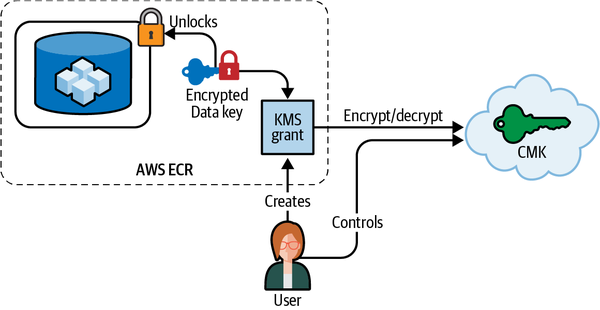
You can enable encryption for container storage in AWS ECR through the AWS Management Console, as seen in Figure 4-11.
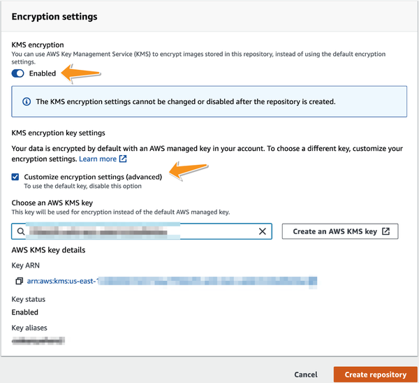
AWS ECR provides the ability to scan containers for common vulnerabilities using the open source clair project. This scanning ensures that the containers are protected from malware. You can either enable common vulnerability and exposure (CVE) scanning by default for every container that is uploaded to AWS ECR or manually scan each container image on ECR. Figure 4-12 shows how you can enable CVE for all images.
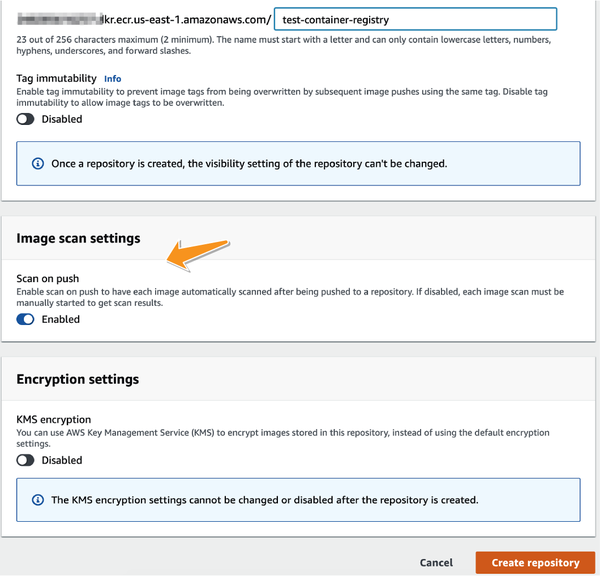
Although AWS Lambda should not be used for long-term storage, sometimes the input variables that are provided to Lambda functions as environment variables may contain sensitive data. Storing this data on the cloud without encrypting may result in a not-so-ideal security situation. Hence, AWS allows you to automatically encrypt the environment variables that are stored for AWS Lambda functions.
There are two ways you can encrypt environment variables:
Encryption using CMK
Encryption using external helpers
Just like AWS S3 and AWS ECR, environment variables can be encrypted on the server side. You can either allow AWS to handle the encryption for you by using the AWS-owned CMK or manage the permissions and the lifecycle around the CMK by providing a reference to an existing CMK. You can then secure this CMK using the PoLP.
Finally, if you run your services on EC2 (either directly or using Amazon Elastic Kubernetes Service [EKS] with EC2 as the worker nodes), AWS KMS can be used to encrypt the backing EBS volumes that back these EC2 instances. As seen in Figure 4-13, the data key for the EBS volume is cached for the purpose of speed and reliability.
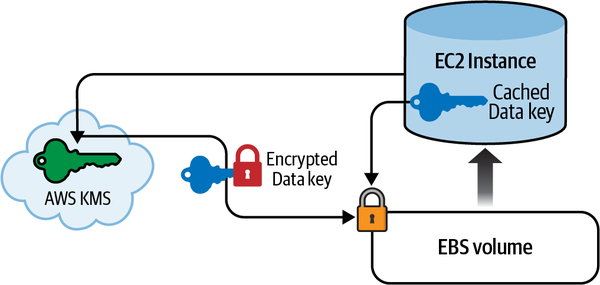
Since the data key is cached inside the EC2 instance, once an instance is attached to the volume, it is able to access the data from the EBS volume without making requests to the KMS-based CMK. Every time the instance is terminated, the instance may need to make a new request to the CMK in order to reattach to the EBS volume.
Now that I’ve explained why security at rest is important, let’s discuss how AWS tools can help protect your microservice code:
For code-level vulnerabilities and resource leaks, AWS CodeGuru helps in running through the code and performing static code analysis.
AWS KMS can help in encrypting EBS volumes (either using AWS managed/owned keys or customer managed CMKs), resulting in a secure build process.
IAM policies can be used to control access to AWS ECR. The containers on ECR can also be encrypted using server-side encryption. Finally, you can use CVE image scanners to scan containers that are stored on AWS ECR for common vulnerabilities.
EBS volumes that are used by Kubernetes nodes can also be encrypted on AWS using KMS and thus be protected from unauthorized access.
Finally, the environment variables that are provided to AWS Lambdas can also be encrypted using either CMK or encryption helpers.
Figure 4-14 points out the various controls that AWS provides us with in order to increase the security for all the steps outlined in Figure 4-8.
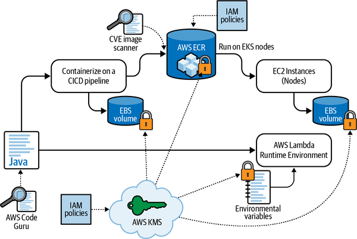
After I’ve explained the different compute services on AWS, I’ll discuss the types of storage options you have for your microservices and how AWS protects your sensitive data.
I have already talked about the possibility of polyglot persistence mechanisms in microservice systems. Figure 4-15 shows a typical microservice-based organization where services are segregated by their functional domains. Each of these domains represents a wider bounded context. Each service talks to a datastore within its bounded context and not to any external datastore. As a result, depending on the needs of the domain, each bounded context may choose to use a different kind of a database.
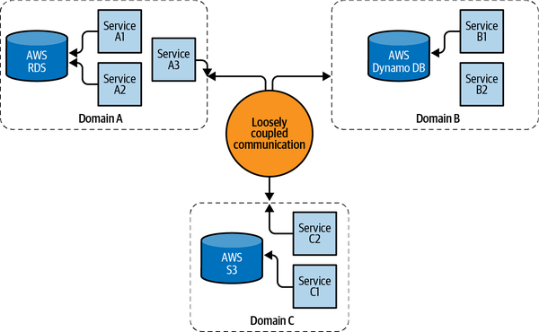
AWS DynamoDB is a serverless, fully managed NoSQL database system that can be used for data storage in various applications.
AWS DynamoDB supports IAM policies just like any other resource on AWS. Using AWS DynamoDB, however, gives you control over who can access what part (row or column or both) of the database and when. The conditions section of an IAM policy gives you fine-grained control of permissions. Let me go through an example to illustrate my point.
Consider an organization that stores employee information in a DynamoDB table. Each row contains a variety of information about each employee. This may include their name, state, country, salary, and Social Security number. You might have two types of users that may access this information:
User: this may be a regular employee who may need to access their own row to change or update their address in the system. However, they may not access their salary or Social Security number for security purposes.
Admin: this is a more powerful user who may need full access to the entire table.
The primary key for fetching each row can be the Username.
Figure 4-16 shows the employee table that can contain the employee information.
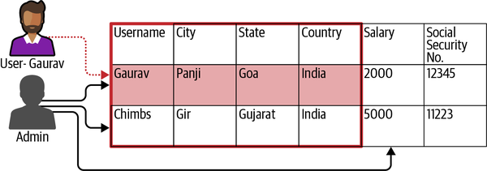
So for IAM user Gaurav, you want to allow:
GetItem and UpdateItem access
Access to specific attributes (Username, City, State, and Country)
Access for only the rows where the username is Gaurav
The IAM policy you can use for such a situation is shown in Figure 4-17.
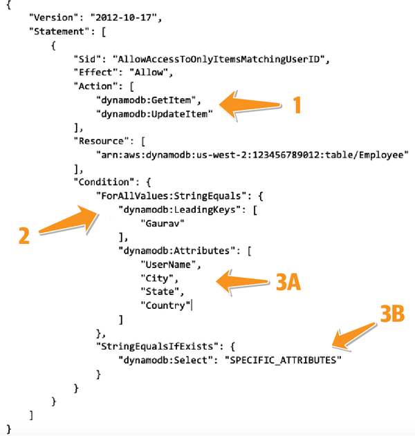
As seen in Figure 4-17, you can use certain policy elements to fine-tune the IAM policy:
To start, you can apply PoLP to the operations you want to allow.
The condition key LeadingKeys can be used to specify the key that should be checked for while applying the policy. In this example, any row that has the key Gaurav will be accessible to the user Gaurav. You can alternatively change the hard-coded name “Gaurav” to ${www.amazon.com:user_id} if you want to direct AWS to allow the currently authenticated user to access a column with their own name, as highlighted in an AWS article.
3A and 3B will specify which attributes are accessible. Since I specify SPECIFIC_ATTRIBUTES (3B) in the statement, only the requests that select a specific subset of the attributes specified in 3A will be allowed to proceed, while any privilege escalation will be denied.
AWS maintains a list of various conditions that you can use to fine-tune such access to AWS DynamoDB. With an effective use of key conditions, you can hide data from various users and thus follow the PoLP on DynamoDB.
DynamoDB offers an easy-to-integrate encryption process to its users in addition to access control. DynamoDB has server-side encryption by default, and it cannot be disabled. DynamoDB uses envelope encryption to encrypt all items that are stored on the table. AWS uses AES-256 symmetric encryption for encrypting all data in DynamoDB.
Each item in a DynamoDB table is encrypted using a data encryption key (DEK). This DEK is then encrypted using a table key. There is one table key per table. Each table key can decrypt multiple DEKs. And finally, this table key is encrypted using a CMK. Figure 4-18 illustrates this flow.
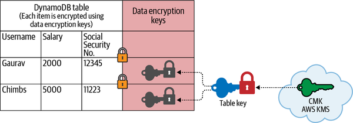
Each time a client wishes to read data from the table, the client first has to make a request to KMS and decrypt the table key using KMS. If the client is authorized to decrypt the table key, DynamoDB then decrypts and caches it on behalf of the client. This table key can then be used to decrypt each DEK and thus decrypt individual items out of DynamoDB. This way, the clients don’t have to make repeated requests to KMS and thus save on KMS fees.
The table key in DynamoDb is cached per connection for five minutes. A cached table key avoids repeated calls to AWS KMS and thus results in faster performance and lower costs. To make most use of the caching capability of KMS, using clients that can pool database connections can result in better performance and lower costs.
Now that I have talked about how AWS KMS can be used for encrypting data on DynamoDB, I will introduce you to the three options you have for using KMS. These options are similar to those you had on AWS S3:
AWS owned CMK
Customer owned CMK
Customer managed CMK
As seen in Figure 4-19, the type of CMK can be selected through the AWS Management Console:
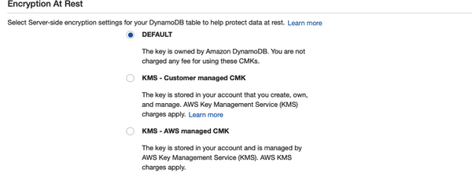
Amazon Aurora is another popular data storage system that is used on AWS. Aurora provides drop-in replacement for popular RDBMS engines such as PostgreSQL and MySQL. Similar to AWS DynamoDB, Aurora databases also can be secured from unauthorized access in two ways:
Using authentication to prevent unauthorized access. This can be further divided into two categories of authentication:
Using encryption to protect the data.
As seen in Figure 4-20, you can decide on the type of authentication option you want to use while creating your database.
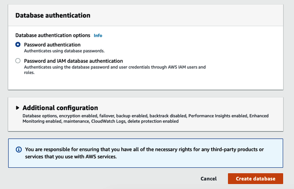
In IAM authentication, instead of using a password to authenticate against the database, you create an authentication token that you include with your database request. These tokens can be generated outside the database using AWS Signature Version 4 (SigV4) and can be used in place of regular authentication.
The biggest advantage that IAM authentication provides you with is that your identities within the database are synced with your identities within your AWS account. This stops you from proliferating identities across your resources.
However, IAM authentication has its limitations. There might be a limitation on how many connections a DB cluster can have per second, depending on its DB instance class and your workload. Hence, AWS recommends that IAM authentication be used only for temporary personal access to databases.
Password authentication is the traditional type of authentication. In this case, every connection to the database has to be initiated with the traditional username and password. Each user and role on the database has to be created by an admin user that exists on the database. The passwords are generally text strings that each calling entity has to remember and enter while establishing the connection. You create users with SQL statements such as CREATE USER for MySQL or PostgreSQL.
Similarly to AWS DynamoDB and AWS S3, all data stored on Amazon Aurora can be encrypted using a CMK. Enabling encryption is extremely easy in Aurora, as seen in Figure 4-21.
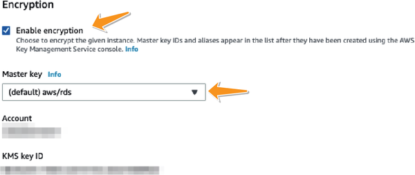
You can either use the AWS managed key to encrypt the database or provide an existing CMK you can control using KMS. The trade-offs of using a customer managed CMK versus using an AWS managed CMK are similar to those when using AWS DynamoDB or using AWS S3.
Disposal of data is an often overlooked aspect of data protection that security professionals have to account for. In physical data centers, after a server has been decommissioned, IT professionals have to perform certain activities (which I will elaborate later) on this server before it can be reused for any other activities. These activities will depend on the class of data that was originally stored on this server. These may include, but are not limited to, zeroing of all your data, reformatting your data, and so forth.
If your hardware stored top secret data, you may have to securely wipe the data from this hardware before you can use it for storing nonconfidential data. This process is called media sanitization. Failure to do so may make the data vulnerable to potentially unauthorized applications that may be able to gain access to these data hashes.
On cloud systems, you may not have complete control over the process of commissioning and decommissioning servers. This problem may be especially more pronounced in microservice architectures where it is common to spin up new projections or take them down.
To begin with, I would like to remind you that any sensitive data in any of your storage volumes must always be encrypted at rest. This at least lessens the probability of a data leak. On its end, AWS assumes the responsibility of sanitizing underlying storage mediums on your behalf, for all of its persistent storage layers, including EBS-backed storage volumes (for example, Amazon Aurora, EC2, and DocumentDB), AWS sanitizes media for you as prescribed by the NIST-800-88 standards. AWS guarantees that storage volumes used by you will be sanitized and securely wiped prior to being made available to the next customer. This form of media sanitization makes AWS volumes compliant with most regulatory standards in the industry.
However, if you work in a highly regulated industry where data encryption and the guarantee that AWS provides for media sanitization are not sufficient, you can make use of third-party media sanitization tools to securely wipe your storage volumes before decommissioning them.
This chapter has dealt mostly with data storage on AWS. I started off by making a case for security around data storage, access control, and encryption. Most storage mechanisms on AWS can be protected using two ways. First, you can prevent unauthorized access to your sensitive data using AWS IAM policies. Second, you can encrypt the data and secure the encryption key, thus adding an extra layer of security on top of your data protection mechanism.
Since microservice environments generally result in polyglot persistence mechanisms, the onus is on security professionals to ensure that each of these services pay special attention to the security policies around each data storage and apply the PoLP on all the storage mechanisms.